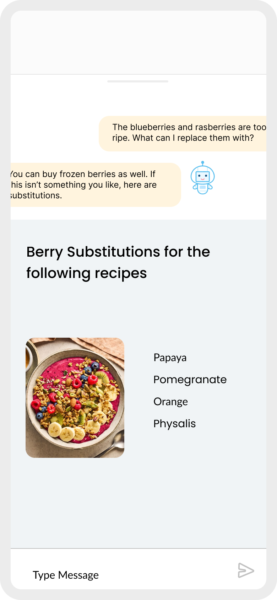
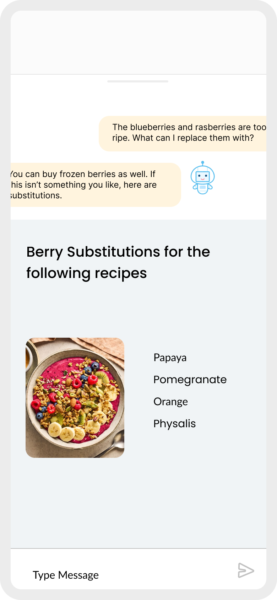

Nena
My Works
How can individuals with limited culinary and organizational skills be motivated to cook more at home?
In this project, I built a meal keeper mobile app concept to assist students who are frustrated by their inability to save money because of excessive spending on dining out.


 
